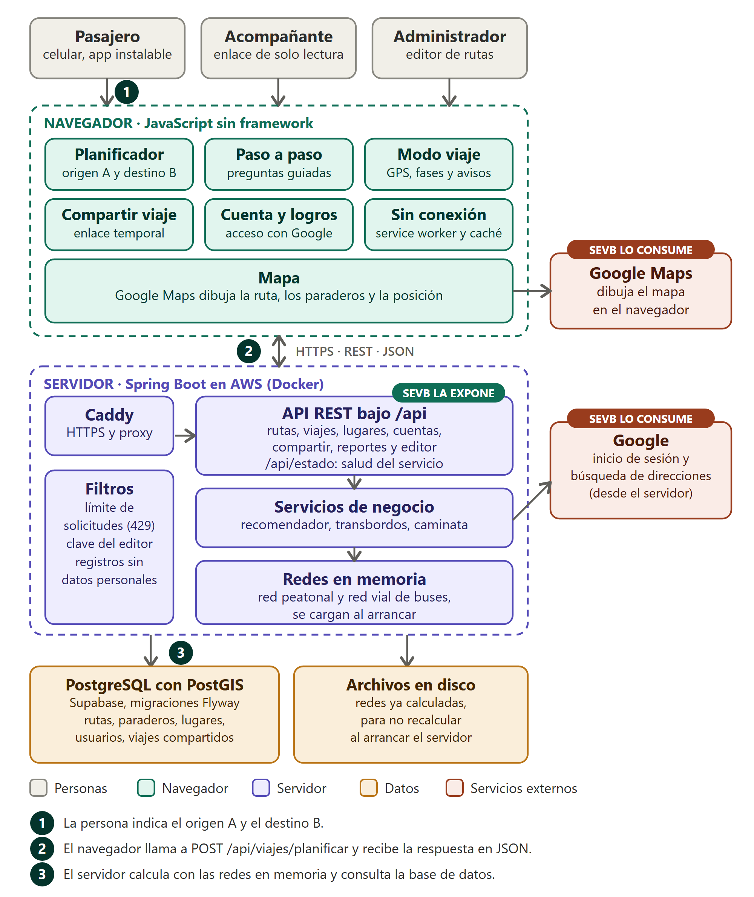

SEVB como servicio: modelo de negocio de una plataforma
de información de transporte urbano para la Alcaldía de Villavicencio
Juan José Montoya Garzón, Santiago Saray y Ángel Hernández
Universidad Santo Tomás, sede Villavicencio
Desarrollo orientado a servicios
Javier Charry
19 de noviembre de 2026
SEVB como servicio: modelo de negocio de una plataforma de información de transporte urbano para la Alcaldía de Villavicencio
Para subir a un bus en Villavicencio hay que saber de antemano cuál tomar, en qué esquina esperarlo y dónde bajarse. Quien lleva años haciéndolo resuelve todo eso de memoria. Un niño que empieza a moverse solo, una persona mayor que se mudó de barrio o un visitante que llega por primera vez no tienen ese conocimiento, y la información disponible circula sobre todo de boca en boca. SEVB (Sistema de Enrutamiento y Visualización de Buses) nació como proyecto académico en la Universidad Santo Tomás, sede Villavicencio, para cerrar esa brecha (Montoya Garzón et al., 2026). En este documento planteamos cómo ofrecérselo a la Alcaldía de Villavicencio como un servicio contratado, de manera que la ciudadanía lo siga usando sin pagar nada. Lo ofreceríamos como un equipo independiente de la universidad, por medio de una empresa propia.
Conviene aclarar de dónde salen las cifras. Las tarifas de la infraestructura, el tipo de cambio y los rangos salariales provienen de fuentes que citamos. Las horas del equipo, el nivel de uso del servicio y los precios de venta son supuestos nuestros, armados como punto de partida para conversar con la entidad. Ninguna cifra es una cotización oficial ni viene de facturación real, y todas deben revisarse antes de presentar una propuesta formal.
SEVB acompaña a una persona desde que abre la aplicación hasta que llega a su destino. Hoy ofrece lo siguiente:
El servidor está escrito en Java 21 con Spring Boot y guarda sus datos en PostgreSQL con PostGIS, alojado en Supabase. La interfaz es JavaScript sin framework. Todo se ejecuta en contenedores Docker detrás de Caddy, en un servidor de Amazon Web Services, y la versión actual responde en https://mapas.spebv.tech. La Figura 1 muestra cómo se conectan las piezas. En el cierre de la versión 4.15.0, las 479 pruebas automáticas del servidor pasaron sin fallos (nueve se omiten cuando no hay Docker disponible), y el equipo mantiene además pruebas de navegador con Playwright.
Figura 1
Arquitectura general de SEVB

Nota. Elaboración propia. El diagrama separa a las personas que usan el sistema, el navegador, el servidor en AWS, los datos y los servicios externos. Las etiquetas verdes indican el servicio que SEVB expone (la API REST) y las rojas los servicios de terceros que consume. Los números siguen una consulta de ruta.
En este modelo hay dos actores con papeles distintos. El que contrata y paga es la Alcaldía de Villavicencio, por medio de la dependencia encargada de la movilidad. El que se beneficia es la ciudadanía que usa el transporte público, y lo hace sin costo. Las empresas que operan las rutas quedan en un tercer lugar: no son clientes, pero las necesitamos como aliadas porque de ellas depende que los recorridos y los paraderos reflejen la realidad.
Partimos de tres hipótesis que habrá que confirmar con la entidad durante el piloto. La primera es que la información sobre rutas y paraderos no está reunida en un canal digital propio de la administración. La segunda es que una parte de la población, sobre todo personas mayores y visitantes, no logra planear un viaje en bus con las herramientas generales que existen. La tercera es que la entidad necesita mantener esos datos al día sin depender de un tercero. SEVB responde a cada una con un canal propio, una experiencia guiada y un editor que maneja la propia Alcaldía.
Para la administración, el servicio reúne cuatro cosas. Primero, un canal digital propio, con la identidad de la ciudad. Segundo, datos de rutas y paraderos que la entidad puede corregir ella misma desde el editor. Tercero, privacidad desde el diseño: la aplicación no conserva el historial de posiciones del GPS, y el enlace para compartir un viaje vence solo, se borra cuando la persona llega y puede revocarse en cualquier momento. Cuarto, accesibilidad y buen comportamiento con mala señal, lo que amplía la cantidad de gente que puede usarla. El tratamiento de datos personales tiene que cumplir la Ley 1581 de 2012, y por eso SEVB se diseñó para recoger la menor cantidad de datos posible (Congreso de la República de Colombia, 2012).
Para ordenar el modelo usamos el lienzo de nueve bloques de Osterwalder y Pigneur (2010), que se resume en la Tabla 1.
Tabla 1
Lienzo del modelo de negocio de SEVB
| Bloque | Contenido |
|---|---|
| Segmentos de clientes | La Alcaldía de Villavicencio, como cliente institucional que contrata. Ciudadanía y visitantes, como usuarios finales sin costo. |
| Propuesta de valor | Un canal digital propio para planear y seguir viajes en bus, datos de rutas que la entidad administra, una experiencia guiada accesible, uso con mala señal y privacidad desde el diseño. |
| Canales | Aplicación web instalable en el celular, enlace en el portal y las redes de la Alcaldía, códigos QR en paraderos (propuesta) y capacitación presencial a funcionarios. |
| Relación con clientes | Acompañamiento durante la implementación, soporte técnico, informes periódicos de uso y un canal de reportes ciudadanos dentro de la aplicación. |
| Fuentes de ingresos | Licencia anual del servicio, implementación inicial, capacitación y soporte evolutivo (Tablas 6 y 9). Nada se cobra a la ciudadanía ni se vende publicidad. |
| Recursos clave | Código y documentación de la versión 4.15.0, infraestructura en la nube, datos de rutas, paraderos y redes viales y peatonales, y el equipo de tres desarrolladores. |
| Actividades clave | Mantener y evolucionar el software, actualizar rutas y paraderos junto con la entidad, operar y vigilar el servicio, dar soporte y capacitación, y hacer pruebas de usabilidad con ciudadanos. |
| Aliados clave | La Alcaldía y su dependencia de movilidad, las empresas operadoras, un contador y una asesoría jurídica, y los proveedores de nube y mapas (AWS, Supabase y Google). |
| Estructura de costos | Pago del equipo de desarrollo, nube y mapas, asesoría jurídica y contable, garantías del contrato, logística de capacitación y una reserva para imprevistos (Tabla 5). |
Nota. Elaboración propia con base en Osterwalder y Pigneur (2010).
Como este trabajo se hace en la materia de desarrollo orientado a servicios, vale la pena mirar el modelo de negocio con esa lente. SEVB se relaciona con la idea de servicio de tres maneras.
El servidor ofrece una API REST que intercambia JSON sobre HTTPS. Con ella se consultan rutas y recorridos, se buscan lugares, se planifica un viaje, se manejan cuentas y se envían reportes, y hay un grupo de operaciones reservado al editor. Una de ellas, /api/estado, informa si la base de datos y el geocodificador responden, y sirve como comprobación de salud para vigilar el servicio. Como la API está documentada, la Alcaldía podría reutilizarla más adelante en otros canales, por ejemplo el portal institucional o pantallas informativas en terminales, sin que haya que reconstruir la lógica de rutas.
SEVB no hace todo por sí mismo. Delega en Google la verificación del inicio de sesión y la búsqueda de direcciones, y dibuja el mapa con Google Maps. La capa de mapas está diseñada con un solo contrato, de modo que cambiar de proveedor no obligaría a reescribir la aplicación. Esa elección reparte el trabajo, pero también crea una dependencia fuerte de Google y costos que crecen con el uso, y por eso aparecen en la matriz de riesgos.
La licencia anual funciona como un contrato de software como servicio. La Alcaldía no compra un código ni un servidor: contrata que la aplicación esté disponible, que tenga copias de seguridad y que alguien responda cuando algo falle. Para que ese compromiso sea medible, proponemos acordar niveles de servicio como los de la Tabla 2.
Tabla 2
Niveles de servicio propuestos para el contrato
| Aspecto | Meta propuesta | Cómo se comprobaría |
|---|---|---|
| Disponibilidad | 99 % mensual | Consulta periódica a /api/estado |
| Copias de seguridad | Diarias, conservadas 14 días, con restauración probada | Registro del procedimiento de respaldo y de las pruebas de restauración |
| Reportes ciudadanos | Primera respuesta en 5 días hábiles | Estado de cada reporte en el panel de administración |
| Cambios en rutas o paraderos | Publicados en 10 días hábiles desde que la operadora entrega la información | Historial de versiones del editor |
| Informe de uso | Mensual | Indicadores acordados con la entidad |
Nota. Las metas son propuestas del equipo para negociar y deben validarse con los resultados del piloto y ajustarse a las horas que realmente podamos dedicar (Tabla 10). Los respaldos diarios con retención de 14 días corresponden al procedimiento que ya trae el proyecto.
El mayor gasto es el trabajo de las tres personas que desarrollan y mantienen el sistema. Los tres somos desarrolladores junior, así que valoramos ese trabajo con los rangos salariales de ese nivel: entre COP 3.800.000 y 4.800.000 al mes (Coderhouse, 2025). Otras fuentes dan promedios más bajos, así que estas cifras deben tomarse como orientación. Usamos COP 4.000.000 al mes por persona, dentro de ese rango y sin recargo por aportes, con el supuesto de que cada integrante asume su propia seguridad social.
Como SEVB ya está construido y la mayor parte del trabajo es configurar, dar soporte y mantener, no nos dedicamos a tiempo completo. El primer año, con la implementación y el piloto, cada integrante trabaja el 15 % de una jornada, unas seis horas a la semana. Desde el segundo año baja al 8 %, unas tres horas. Así cada uno recibe COP 600.000 al mes el primer año y COP 320.000 después, un pago modesto pero real, que es lo que justifica los precios de la Tabla 6. La Tabla 3 muestra los valores.
Tabla 3
Dedicación y pago del equipo
| Integrante | Horas por semana, año 1 | Horas por semana, años 2 y 3 | Pago anual, año 1 (COP) | Pago anual, años 2 y 3 (COP) |
|---|---|---|---|---|
| Juan José Montoya Garzón | 6 | 3 | 7.200.000 | 3.840.000 |
| Santiago Saray | 6 | 3 | 7.200.000 | 3.840.000 |
| Ángel Hernández | 6 | 3 | 7.200.000 | 3.840.000 |
| Costo anual del equipo | 21.600.000 | 11.520.000 |
Nota. Los rangos salariales de referencia son de Coderhouse (2025). Se usan COP 4.000.000 al mes por persona, es decir, 600.000 al mes con 6 horas semanales y 320.000 con 3 horas. Las horas y la ausencia de recargo por aportes son supuestos del equipo.
La infraestructura pesa mucho menos. El servidor corre en un plan de Amazon Lightsail de 4 GB de memoria y 2 procesadores, que cuesta 24 dólares al mes (Amazon Web Services, s. f.). La base de datos está en Supabase, cuyo plan Pro parte de 25 dólares mensuales (Supabase, s. f.). Ese valor corresponde a una operación completa; en el primer año, con una adopción gradual, suponemos que alcanza el plan gratuito. El mapa de Google se cobra por cargas: las primeras 10.000 de cada mes son gratis y las siguientes valen 7 dólares por cada 1.000 (Google, s. f.). Con 15.000 cargas al mes el costo sería de 35 dólares. En el primer año suponemos menos de 10.000 cargas y, por tanto, ningún cobro, y en los siguientes que el uso se mantenga en torno a 15.000. Convertimos a pesos con un tipo de cambio de COP 3.300 por dólar, cercano al de mediados de noviembre de 2026 (HSB Noticias, 2026).
Tabla 4
Supuestos de infraestructura y servicios de terceros
| Servicio | Supuesto | Año 1 (USD al mes) | Años 2 y 3 (USD al mes) |
|---|---|---|---|
| Servidor en AWS | Plan de Lightsail con 4 GB de memoria y 2 procesadores | 24 | 24 |
| Base de datos en Supabase | Plan gratuito el primer año; plan Pro después | 0 | 25 |
| Mapa de Google (Dynamic Maps) | Menos de 10.000 cargas al mes el primer año; luego 15.000, con las primeras 10.000 gratis y el resto a 7 dólares por 1.000 | 0 | 35 |
| Búsqueda de direcciones de Google | Estimación sin medir; debe reemplazarse con la factura real | 20 | 30 |
| Dominio y copias externas | Estimación | 10 | 10 |
| Total mensual | Al año: COP 2.138.400 en el año 1 y COP 4.910.400 después (dólar a COP 3.300) | 54 | 124 |
Nota. Tarifas tomadas de Amazon Web Services (s. f.), Supabase (s. f.) y Google (s. f.). El nivel de uso y las estimaciones sin fuente son supuestos del equipo. Las tarifas de los proveedores cambian y deben consultarse de nuevo antes de cotizar.
A esos dos rubros se suman los gastos de existir como proveedor del Estado. Como contrataremos por medio de una empresa propia, hay que pagar su constitución, un contador, la facturación electrónica y la asesoría jurídica, además de las garantías o pólizas que suelen exigirse para cumplir el contrato. Sumados todos, con una reserva de 10 % para imprevistos, se obtienen los costos de la Tabla 5.
Tabla 5
Costos anuales estimados
| Concepto | Año 1 (COP) | Año 2 (COP) | Año 3 (COP) |
|---|---|---|---|
| Pago del equipo (Tabla 3) | 21.600.000 | 11.520.000 | 11.520.000 |
| Infraestructura y servicios (Tabla 4) | 2.138.000 | 4.910.000 | 4.910.000 |
| Constitución de la empresa, contador y asesoría jurídica | 6.000.000 | 4.000.000 | 4.000.000 |
| Garantías y pólizas del contrato | 300.000 | 300.000 | 300.000 |
| Logística de capacitación y piloto | 250.000 | 0 | 0 |
| Reserva para imprevistos (10 %) | 3.028.800 | 2.073.000 | 2.073.000 |
| Total | 33.316.800 | 22.803.000 | 22.803.000 |
Nota. Supuestos del equipo. Suponemos que el uso se mantiene moderado, de modo que la infraestructura no cambia después del primer año, y que el pago del equipo se mantiene en los años 2 y 3. Los valores de asesoría, garantías y logística son estimaciones que deben reemplazarse por cotizaciones reales.
El modelo combina un ingreso recurrente, la licencia anual, con ingresos que se cobran una sola vez por implementar y capacitar, y un componente de evolución y soporte ampliado desde el segundo año. El primer año se ofrece a un precio de lanzamiento, algo menor que el del segundo, para que la Alcaldía pueda probar el servicio con poco riesgo. La Tabla 6 reúne los valores. La licencia incluye los costos de los mapas hasta un nivel de uso que se fijará con la facturación real del piloto.
Tabla 6
Conceptos de ingreso y valores de referencia
| Concepto | Qué incluye | Periodicidad | Valor (COP) |
|---|---|---|---|
| Implementación inicial | Carga de rutas y paraderos, configuración del dominio y de los mapas, piloto y pruebas con ciudadanos | Una vez | 17.000.000 |
| Licencia y operación, año 1 (precio de lanzamiento) | Alojamiento, mantenimiento, copias de seguridad, mapas hasta el nivel de uso acordado y soporte básico | Anual | 17.000.000 |
| Capacitación a funcionarios | Manejo del editor de rutas y paraderos, y atención de reportes | Una vez | 3.000.000 |
| Total del primer año | Equivale a COP 44.030.000 con IVA | Año 1 | 37.000.000 |
| Licencia y operación, desde el año 2 | Los mismos servicios de la licencia del primer año, con el precio completo | Anual | 20.000.000 |
| Evolución y soporte ampliado | Mejoras acordadas y atención prioritaria (desde el año 2) | Anual | 5.000.000 |
| Total de cada año, desde el segundo | Equivale a COP 29.750.000 con IVA | Anual | 25.000.000 |
Nota. Valores antes de IVA, propuestos como punto de partida de la negociación y sin carácter de cotización oficial. Suponemos que el precio del segundo año se mantiene en el tercero; desde el cuarto se ajustaría con el índice que fije el contrato.
Todos los valores se expresan antes de IVA. La tarifa general de este impuesto es de 19 % (Presidencia de la República de Colombia, 1989, art. 468), de modo que el servicio completo del primer año, que suma COP 37.000.000, le costaría a la Alcaldía COP 44.030.000, y cada año siguiente, COP 25.000.000, quedaría en COP 29.750.000. Si algún componente tuviera un tratamiento tributario distinto, lo confirmará el contador.
La Tabla 7 proyecta ingresos, costos y utilidad para un escenario prudente: un solo cliente, la Alcaldía de Villavicencio, y ningún ingreso de otras ciudades.
Tabla 7
Proyección a tres años con un solo cliente
| Concepto | Año 1 (COP) | Año 2 (COP) | Año 3 (COP) |
|---|---|---|---|
| Implementación inicial | 17.000.000 | 0 | 0 |
| Licencia y operación del servicio | 17.000.000 | 20.000.000 | 20.000.000 |
| Capacitación a funcionarios | 3.000.000 | 0 | 0 |
| Evolución y soporte ampliado | 0 | 5.000.000 | 5.000.000 |
| Ingresos totales | 37.000.000 | 25.000.000 | 25.000.000 |
| Costos totales (Tabla 5) | 33.316.800 | 22.803.000 | 22.803.000 |
| Utilidad antes de impuestos | 3.683.200 | 2.197.000 | 2.197.000 |
| Margen sobre ingresos | 10,0 % | 8,8 % | 8,8 % |
Nota. Elaboración propia a partir de los supuestos de las Tablas 5 y 6, antes de IVA y de impuesto de renta. Sirve para discutir el modelo, no para predecir resultados, y debe actualizarse con datos reales.
El primer año deja COP 3.683.200, un margen de 10,0 %, y los dos siguientes dejan COP 2.197.000 cada uno, un 8,8 %. Sumadas, las utilidades de los tres años llegan a COP 8.077.200. Son márgenes bajos a propósito: preferimos un precio que la Alcaldía pueda aprobar a uno que deje más ganancia y no se contrate. Si la Alcaldía decidiera no contratar, podríamos mantener SEVB como proyecto académico y ofrecerlo a otras ciudades intermedias, para lo cual habría que ajustar los límites geográficos y cargar los datos de transporte de cada una. Ese camino queda como crecimiento posterior y no forma parte de las cifras de la Tabla 7.
Como los tres somos desarrolladores junior, la pregunta de fondo es cuánto recibe cada integrante. Cada uno cobra el pago por sus horas (Tabla 3) y las tres personas se reparten en partes iguales la utilidad de la Tabla 7. En los tres años, cada integrante recibiría COP 17.572.400: COP 14.880.000 como pago por su trabajo y COP 2.692.400 como su parte de la utilidad. Es poco dinero para tres años, pero también es poco tiempo: seis horas semanales el primer año y tres después. Además del dinero, el proyecto deja experiencia comprobable con un cliente real, que para perfiles junior puede pesar más que el pago.
Tabla 8
Lo que recibiría el equipo en tres años
| Concepto | Pago año 1 (COP) | Pago años 2 y 3 (COP) | Parte de la utilidad (COP) | Total tres años (COP) |
|---|---|---|---|---|
| Cada integrante | 7.200.000 | 7.680.000 | 2.692.400 | 17.572.400 |
| Equipo completo | 21.600.000 | 23.040.000 | 8.077.200 | 52.717.200 |
Nota. Elaboración propia a partir de las Tablas 3 y 7. La columna de pago de los años 2 y 3 suma los dos años. Los valores son antes de impuestos y no incluyen la seguridad social de cada integrante. Como contrataremos por medio de una empresa propia, esta paga el impuesto de renta y habrá que definir cómo se reparte la utilidad entre los tres.
Los precios de la Tabla 6 no salen de una tarifa de mercado, porque para un servicio como este todavía no tenemos una referencia comparable. Los armamos desde los costos: calculamos cuánto cuesta operar SEVB y pagar al equipo cada año (Tabla 5) y le sumamos un margen cercano al 10 %. La licencia del segundo año, de COP 20.000.000, equivale a una cuota de unos COP 1.667.000 al mes, o a unos COP 55.000 por día de servicio disponible. Es el precio que más hay que defender, porque es el que se repite cada año. El primer año lleva un precio de lanzamiento: la licencia vale COP 17.000.000 en lugar de 20.000.000.
Descartamos otras fuentes de ingreso por decisión de diseño. A la ciudadanía no se le cobra, no se vende publicidad dentro de la aplicación y los datos de las personas no se comercializan. La razón es sencilla: SEVB le sirve a la Alcaldía precisamente porque es un canal público confiable y respetuoso con la privacidad, y cualquiera de esas tres opciones le quitaría ese valor.
Para que la entidad pueda decidir por etapas, el mismo servicio se ofrece en tres formas, que resume la Tabla 9.
Tabla 9
Opciones de contratación y valores de referencia
| Opción | Alcance | Pago | Valor (COP) |
|---|---|---|---|
| 1. Piloto | Un grupo de rutas durante dos meses, con pruebas de usabilidad. Cubre el trabajo del equipo y la infraestructura de ese periodo. Si la entidad continúa, el valor se descuenta de la implementación inicial. | Una vez | 4.000.000 |
| 2. Servicio completo, primer año | Implementación, capacitación y primer año de licencia y operación, a precio de lanzamiento. | Una vez y anual | 37.000.000 |
| 3. Servicio desde el segundo año | Licencia y operación, con mejoras acordadas y atención prioritaria. Mismo valor en los años 2 y 3. | Anual | 25.000.000 |
Nota. Elaboración propia a partir de la Tabla 6, antes de IVA. Con IVA, el piloto cuesta COP 4.760.000, la opción 2, COP 44.030.000 y la opción 3, COP 29.750.000. Los 4.000.000 del piloto son un supuesto nuestro y no cambian la proyección de la Tabla 7, porque se abonan a la implementación.
Proponemos pagar la implementación en dos partes, la mitad al firmar el acta de inicio y la otra mitad al recibir el servicio a satisfacción, y la licencia en cuotas periódicas, de forma que la entidad no tenga que adelantar el año completo. El calendario exacto dependerá de lo que permitan los procesos de pago de la Alcaldía. Como las entidades públicas a veces demoran los desembolsos, la empresa necesita capital de trabajo para cubrir unos meses de pagos mientras llega el desembolso. El precio de la licencia se mantiene igual en los años 2 y 3, y desde el cuarto se ajustaría con el índice que fije el contrato. Si el costo de los mapas de Google sube más de lo esperado por un mayor uso, el contrato debería permitir revisar el precio, con un umbral que se defina a partir de la facturación real del piloto. El contrato debe dejar escrito desde el principio que el precio de lanzamiento vale solo para el primer año y cuál será el precio de los siguientes, para que el aumento no sorprenda a la entidad.
Los precios dependen de que cada uno trabaje pocas horas. Si la Alcaldía pidiera una atención más intensa, o si quisiéramos ganar más, el precio mínimo tendría que subir. La Tabla 10 calcula cuánto costaría el segundo año según las horas semanales de cada integrante.
Tabla 10
Precio mínimo del segundo año según las horas de trabajo
| Horas por semana, por persona | Pago anual del equipo (COP) | Costo total, año 2 (COP) | Precio mínimo con IVA (COP) |
|---|---|---|---|
| Unas 3 (8 %, valor base) | 11.520.000 | 22.803.000 | 27.135.570 |
| 6 (15 %) | 21.600.000 | 33.891.000 | 40.330.290 |
| 10 (25 %) | 36.000.000 | 49.731.000 | 59.179.890 |
| 20 (50 %) | 72.000.000 | 89.331.000 | 106.303.890 |
Nota. Elaboración propia. El pago del equipo supone COP 4.000.000 al mes por persona, prorrateado por las horas; los demás costos son los de la Tabla 5, más 10 % de reserva. El precio mínimo es el que cubre los costos sin dejar utilidad.
La tabla deja dos lecciones. La primera es que con tres horas semanales por persona el margen es de apenas 9 %, y un imprevisto serio lo borraría. La segunda es que atender a la Alcaldía con más intensidad cuesta bastante más: con seis horas por persona, el segundo año pasaría de unos 30 a unos 40 millones con IVA. Por eso los niveles de servicio de la Tabla 2 deben acordarse según las horas que de verdad podamos dar.
Antes de presentar una propuesta hay que contrastar estos valores con referencias externas: contratos de software o de plataformas de información similares que hayan firmado entidades públicas (por ejemplo, los registrados en el SECOP) y cotizaciones de proveedores comparables. También hay que revisar con la asesoría jurídica cómo influye el valor total del contrato en la modalidad de contratación que le corresponde. Mientras eso no se haga, los precios de venta siguen siendo una hipótesis de trabajo.
En pocas palabras: SEVB no se le vende al Estado como un producto que se entrega y se cobra, sino como un servicio que se contrata, y la venta se hace en etapas. Primero se demuestra con un piloto pequeño, después se firma un contrato por la modalidad que escoja la entidad y, al final, se renueva con los resultados en la mano. A continuación explicamos cómo compra el Estado, por qué vías podría contratarnos y qué haríamos paso a paso.
Una entidad pública no compra como un cliente privado. No puede aceptar un producto porque le guste ni adoptar el precio que le diga el proveedor. Antes de contratar tiene que planear: la necesidad debe estar prevista en su plan anual de adquisiciones o en un proyecto de inversión, y debe hacer un estudio del sector que sustente el valor estimado del contrato (Presidencia de la República de Colombia, 2015). Para estimar ese valor puede apoyarse en sondeos de mercado, cotizaciones o precios históricos, y es la entidad la que escoge el método (Agencia Nacional de Contratación Pública, 2025a, 2025b). De ahí sale una idea útil para nosotros: nuestra cotización no es el precio del contrato, sino un insumo que la Alcaldía compara con otros antes de decidir.
El valor del contrato también pesa en la modalidad. La regla general es el proceso competitivo, y la contratación directa es una excepción (Congreso de la República de Colombia, 1993, 2007). La mínima cuantía corresponde al 10 % de la menor cuantía de cada entidad (Congreso de la República de Colombia, 2007, 2020), de modo que, según el presupuesto de la Alcaldía, un contrato de este tamaño podría tramitarse por un proceso sencillo o exigir uno más formal. La asesoría jurídica tendrá que confirmarlo.
Para SEVB vemos las rutas de la Tabla 11. Ninguna está confirmada: la modalidad la decide la Alcaldía con su asesoría jurídica, y por eso esta tabla es un punto de partida para esa conversación.
Tabla 11
Rutas posibles para que la Alcaldía contrate SEVB
| Ruta | Cómo funcionaría | Dudas por resolver |
|---|---|---|
| Mínima cuantía | Si el valor del contrato es bajo, la Alcaldía publica una invitación con plazos cortos y escoge entre las ofertas que reciba (Congreso de la República de Colombia, 2020). | Depende del presupuesto de la Alcaldía. Exige tener una empresa constituida, y puede ganar otro proveedor. |
| Convocatoria limitada a Mipymes | La ley permite que algunas convocatorias se limiten a micro, pequeñas y medianas empresas, y una empresa recién creada como la nuestra podría encajar en ese tamaño (Presidencia de la República de Colombia, 2021). | Solo aplica si la entidad decide limitar la convocatoria y se cumplen las condiciones del decreto. |
| Contratación directa de actividades de ciencia, tecnología e innovación | La ley permite contratar directamente actividades científicas y tecnológicas. La Agencia concluyó que todas las entidades sometidas al Estatuto de Contratación pueden usar esta causal, aunque los convenios especiales quedan para las del orden nacional (Agencia Nacional de Contratación Pública, 2025c). | Habría que justificar que SEVB, como plataforma de información, cuenta como una actividad de ese tipo. |
| Acuerdos marco de precios | La Tienda Virtual del Estado reúne acuerdos para comprar tecnología, como el licenciamiento de software y los servicios de nube (Ministerio de Tecnologías de la Información y las Comunicaciones [MinTIC], s. f.). | SEVB es un servicio a la medida y probablemente no encaja ahí. Habría que preguntarlo a la Agencia. |
Nota. Elaboración propia a partir de las fuentes citadas. No es una opinión jurídica: la modalidad debe confirmarla una asesoría jurídica y la define la entidad.
De esas rutas, recomendamos avanzar en tres etapas. La Tabla 12 dice qué se hace en cada una, cómo se contrataría y cuánto costaría.
Tabla 12
Ruta de venta recomendada en tres etapas
| Etapa | Qué se hace | Cómo se contrataría | Valor con IVA (COP) |
|---|---|---|---|
| 1. Piloto (meses 2 y 3) | Servicio funcionando con las rutas de la ciudad durante dos meses, con pruebas de usabilidad y un informe de resultados. | Un piloto sin costo, formalizado con el acuerdo de prueba que defina la entidad, o un contrato de mínima cuantía si tiene valor. La entidad y su asesoría jurídica deciden la forma. | 4.760.000 |
| 2. Contrato del primer año (desde el mes 4) | Implementación completa, capacitación a funcionarios y primer año de licencia y operación. | La modalidad que defina la Alcaldía: proceso competitivo (por ejemplo, mínima cuantía o convocatoria para Mipymes) o contratación directa de ciencia y tecnología. Exige que nuestra empresa esté constituida. | 44.030.000 |
| 3. Renovación (años 2 y 3) | Licencia, operación y soporte, con los resultados del primer año como respaldo. | Prórroga del contrato o nuevo proceso, según indique la entidad. | 29.750.000 por año |
Nota. Elaboración propia a partir de las Tablas 9 y 11. El valor del piloto se descuenta del contrato del primer año. Las modalidades dependen de lo que decida la entidad.
Para llegar a la primera reunión con la Alcaldía, el equipo prepara cuatro documentos: una propuesta técnica con la cotización desglosada como en la Tabla 6, los niveles de servicio de la Tabla 2, el documento de tratamiento de datos personales que ya tiene el proyecto y el informe de pruebas. La entidad pedirá además los documentos legales de nuestra empresa, como el certificado de la Cámara de Comercio y el RUT, y los que exija la modalidad. En la reunión llevamos tres mensajes: que la información de rutas hoy está dispersa y es difícil para quien no conoce la ciudad, que SEVB ya funciona y se puede probar con datos reales, y que pedimos dos cosas, un piloto de dos meses y que la necesidad se incluya en el plan de adquisiciones. Los pasos concretos aparecen en la Tabla 13.
Tabla 13
Pasos para vender SEVB a una entidad pública
| N.º | Paso | Qué hacemos |
|---|---|---|
| 1 | Constituir la empresa | Crear la sociedad ante la Cámara de Comercio, obtener el RUT, contratar al contador y acordar entre los tres cómo se reparte el pago y la utilidad. |
| 2 | Elegir con quién hablar | Presentar el proyecto a la dependencia de movilidad y a la de tecnología, y buscar a quien lleva el plan de desarrollo y el plan de adquisiciones. |
| 3 | Demostrar con un piloto | Poner a funcionar el servicio con las rutas de la ciudad y recoger resultados de uso y de usabilidad. |
| 4 | Alinear con el plan de desarrollo | Mostrar a qué meta de la Alcaldía responde SEVB y pedir que la necesidad se incluya en el plan de adquisiciones y cuente con presupuesto. |
| 5 | Entregar una cotización detallada | Presentar los valores de la Tabla 6 con los supuestos a la vista, para que sirvan de insumo al estudio del sector de la entidad. |
| 6 | Respetar el papel de la entidad | Aportar información técnica cuando la pidan, sin redactar por ellos los estudios previos ni decidir la modalidad, para evitar conflictos de interés. |
| 7 | Contratar | Firmar por la modalidad que defina la entidad (Tabla 11), con las garantías, el supervisor y los indicadores del contrato. |
| 8 | Medir y renovar | Entregar el informe mensual de uso, usar los resultados para renovar y ofrecer el servicio a otras alcaldías. |
Nota. Elaboración propia.
No podemos afirmar por nuestra cuenta que el precio sea el adecuado, porque lo valida la Alcaldía con su estudio del sector. Lo que sí podemos hacer es mostrar de dónde sale y que se pueda defender. Se construye desde costos reales: un equipo junior pagado dentro de los rangos de mercado (Coderhouse, 2025), tarifas publicadas de la infraestructura y un margen cercano al 10 %. Visto desde el comprador, son unos COP 55.000 por día de servicio disponible.
Hay dos debilidades que conviene decir de frente. La primera es que, como cada uno trabaja pocas horas, el precio queda por debajo de lo que cobraría una empresa con personal dedicado. Si la entidad compara, el nuestro será de los más bajos, y tendremos que explicar que se debe a la dedicación parcial y a que SEVB ya está construido. La segunda es que con tan pocas horas no podemos prometer una atención inmediata: los niveles de servicio de la Tabla 2 deben ser realistas, y si la Alcaldía quiere más atención, el precio sube según la Tabla 10.
La Tabla 14 resume los riesgos principales del modelo y lo que haríamos frente a cada uno.
Tabla 14
Riesgos principales y mitigación
| Riesgo | Mitigación |
|---|---|
| Contratación pública lenta o con requisitos que no previmos | Consultar pronto a una asesoría jurídica, proponer el trabajo por fases con un piloto corto y tener lista la documentación técnica y de pruebas para la entidad. |
| Pagos tardíos de la entidad | Pagos por entregables aprobados, capital de trabajo para varios meses de pagos al equipo y garantías claras en el contrato. |
| Costos de mapas y servicios que crecen con el uso | Incluir en el contrato un nivel de uso acordado y la revisión del precio si se supera, medir la facturación real durante el piloto y, si el costo se volviera un problema, cambiar de proveedor de mapas gracias a la capa de mapas con un solo contrato. |
| Información de rutas desactualizada | Un editor que maneja la propia entidad, un proceso de actualización acordado con las operadoras y los reportes ciudadanos que llegan desde la aplicación. |
| Dependencia de proveedores (nube, base de datos y mapas) | Una capa de mapas con un solo contrato, que permitiría cambiar de proveedor, una migración de la base de datos ya probada y el paso a planes de pago cuando el uso lo exija. |
| Protección de datos personales | Cumplir la Ley 1581 de 2012, no guardar el historial del GPS y usar un enlace de viaje compartido que vence, se borra al llegar y se puede revocar. |
| Poca adopción por parte de la ciudadanía | El flujo guiado para quienes tienen poca experiencia con el celular, pruebas de usabilidad con ciudadanos (el protocolo ya está definido) y difusión en los canales de la Alcaldía. |
| Equipo junior con poco tiempo disponible | Código documentado, pruebas automáticas, niveles de servicio acordes con las horas reales y la posibilidad de subir las horas con el precio de la Tabla 10. |
| Precio de lanzamiento difícil de subir | Dejar por escrito en el contrato el precio del segundo año y presentar el primer año como una etapa de prueba. |
| Precios sin contrastar con el mercado | Revisar contratos públicos comparables y pedir cotizaciones antes de la oferta, y mantener la propuesta por fases para poder ajustar. |
| Costos y trámites de ser empresa | Contratar un contador desde el inicio, tener incluidos esos costos en la Tabla 5 y confirmar con la asesoría jurídica las obligaciones de la sociedad antes de ofertar. |
| Un solo cliente | Mantener el servicio adaptable a otras ciudades intermedias, cambiando los límites geográficos y los datos de transporte. |
| Propiedad intelectual y licencia sin definir | Que los tres acordemos y declaremos la licencia definitiva, y que revisemos si el reglamento de la universidad dice algo sobre proyectos hechos como trabajo académico, antes de firmar cualquier contrato. |
| Continuidad del equipo | Código documentado, 479 pruebas automáticas del servidor y procedimientos de despliegue por escrito. |
Nota. Elaboración propia.
La Tabla 15 propone un calendario de referencia. Los plazos son estimaciones y dependen de los tiempos de la entidad.
Tabla 15
Fases del plan de implementación
| Fase | Periodo | Resultado esperado |
|---|---|---|
| 0. Validación | Mes 1 | Revisión jurídica de la modalidad de contratación, constitución de la empresa, acuerdo entre nosotros sobre la propiedad intelectual y definición de las rutas del piloto. |
| 1. Piloto | Meses 2 y 3 | Servicio funcionando con un grupo de rutas, pruebas de usabilidad con ciudadanos y ajustes. |
| 2. Implementación | Meses 4 y 5 | Carga completa de rutas y paraderos, capacitación a funcionarios y salida pública. |
| 3. Operación | Desde el mes 6 | Soporte, actualización de datos, informes periódicos y evolución del servicio. |
Nota. Elaboración propia.
Para saber si el servicio funciona, queremos acordar con la Alcaldía, desde la fase de validación, algunos indicadores: viajes iniciados, proporción de personas que completan la planificación sin ayuda, disponibilidad del servicio, reportes ciudadanos atendidos y satisfacción de quienes lo usan. Como SEVB no guarda recorridos individuales, los conteos tendrían que salir de contadores agregados y anónimos, que habría que definir con la entidad y construir durante el piloto. Las metas numéricas de cada indicador se fijarán con la Alcaldía a partir de los resultados de esa etapa.
SEVB ya funciona y responde a un problema concreto: facilitar el uso del transporte público urbano de Villavicencio, incluso a quienes casi no usan el celular. El modelo que proponemos cobra una licencia anual y suma pagos únicos por implementar y capacitar, y deja el servicio gratuito para la ciudadanía. Con un equipo junior pagado por pocas horas, el primer año cuesta COP 44.030.000 con IVA y cada año siguiente COP 29.750.000, con márgenes de entre 9 % y 10 %. Cada integrante recibiría unos COP 17,6 millones en tres años. Eso hace el modelo sostenible con un solo cliente institucional, aunque sin mucho colchón. La venta se haría por medio de una empresa propia y en tres etapas: un piloto, un contrato del primer año por la modalidad que defina la Alcaldía y una renovación respaldada por resultados.
Antes de una propuesta formal quedan tareas pendientes: validar con la Alcaldía las hipótesis del problema, contrastar los precios con contratos y cotizaciones de referencia, reemplazar los supuestos de costos por datos reales, definir la licencia y la propiedad intelectual, constituir la empresa y acordar entre nosotros cómo se reparte el pago, y hacer las pruebas de usabilidad con ciudadanos. El plan por fases las contempla todas, y son el camino para pasar de un proyecto académico a un servicio contratado.
Agencia Nacional de Contratación Pública. (2025a). Concepto C-1181 de 2025. Colombia Compra Eficiente. https://relatoria.colombiacompra.gov.co/conceptos/c-1181-de-2025/
Agencia Nacional de Contratación Pública. (2025b). Concepto C-1686 de 2025. Colombia Compra Eficiente. https://relatoria.colombiacompra.gov.co/conceptos/c-1686-de-2025/
Agencia Nacional de Contratación Pública. (2025c). Concepto C-739 de 2025. Colombia Compra Eficiente. https://relatoria.colombiacompra.gov.co/conceptos/c-739-de-2025/
Amazon Web Services. (s. f.). Amazon Lightsail pricing. Recuperado el 19 de noviembre de 2026, de https://aws.amazon.com/es/lightsail/pricing/
Coderhouse. (2025). Sueldo de desarrollador de aplicaciones en Colombia 2025. https://www.coderhouse.com/es/sueldos/sueldo-desarrollador-aplicaciones-colombia-2025
Congreso de la República de Colombia. (1993, 28 de octubre). Ley 80 de 1993, por la cual se expide el Estatuto General de Contratación de la Administración Pública. Diario Oficial n.º 41.094.
Congreso de la República de Colombia. (2007, 16 de julio). Ley 1150 de 2007, por medio de la cual se introducen medidas para la eficiencia y la transparencia en la Ley 80 de 1993 y se dictan otras disposiciones generales sobre la contratación con recursos públicos. Diario Oficial n.º 46.691.
Congreso de la República de Colombia. (2012, 17 de octubre). Ley 1581 de 2012, por la cual se dictan disposiciones generales para la protección de datos personales. Diario Oficial n.º 48.587.
Congreso de la República de Colombia. (2020, 31 de diciembre). Ley 2069 de 2020, por medio de la cual se impulsa el emprendimiento en Colombia.
Google. (s. f.). Google Maps Platform core services pricing list. Google for Developers. Recuperado el 19 de noviembre de 2026, de https://developers.google.com/maps/billing-and-pricing/pricing
HSB Noticias. (2026, 13 de noviembre). Dólar alcanzó su nivel más alto en más de un mes este 13 de noviembre. https://hsbnoticias.com/noticias/dolar-alcanzo-su-nivel-mas-alto-en-mas-de-un-mes-este-13-de-noviembre
Ministerio de Tecnologías de la Información y las Comunicaciones. (s. f.). Acuerdos marco de precio de TI. Recuperado el 19 de noviembre de 2026, de https://mintic.gov.co/portal/inicio/Atencion-y-Servicio-a-la-Ciudadania/Preguntas-frecuentes/54838:Acuerdos-marco-de-precio-de-TI
Montoya Garzón, J. J., Saray, S. y Hernández, Á. (2026). SEVB: Sistema de Enrutamiento y Visualización de Buses de Villavicencio (Versión 4.15.0) [Software]. GitHub. https://github.com/sixnain96/SEVB-4.12.1
Osterwalder, A. y Pigneur, Y. (2010). Business model generation: A handbook for visionaries, game changers, and challengers. John Wiley & Sons.
Presidencia de la República de Colombia. (1989, 30 de marzo). Decreto 624 de 1989, por el cual se expide el Estatuto Tributario de los impuestos administrados por la Dirección General de Impuestos Nacionales.
Presidencia de la República de Colombia. (2015, 26 de mayo). Decreto 1082 de 2015, por medio del cual se expide el Decreto Único Reglamentario del Sector Administrativo de Planeación Nacional.
Presidencia de la República de Colombia. (2021). Decreto 1860 de 2021, por el cual se reglamentan los artículos 30, 31, 32, 34 y 35 de la Ley 2069 de 2020.
Supabase. (s. f.). Pricing. Recuperado el 19 de noviembre de 2026, de https://supabase.com/pricing